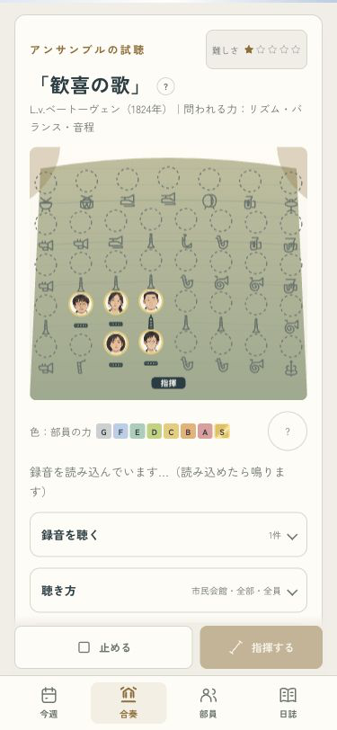
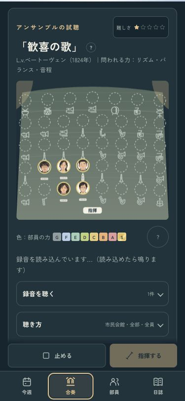
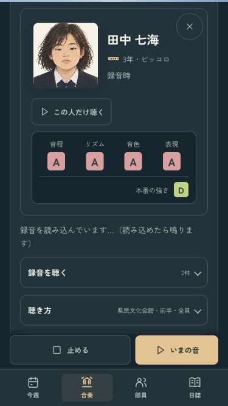

B · 舞台の中へ
音を待つあいだも、同じメンバー。
選んだ音の読み込みを待っている間も、曲名と舞台の顔をそろえました。中止したら今の部へ戻ります。


昔の録音も、当時の本人へ
音源を待っている間に顔を押しても、当時の名前・学年・楽器・力を表示します。中止すると当時のカードを閉じます。

音源待機・録音切り替え・今の本人だけの試聴・1年分の進行を確認済み。
iPhoneへ導入済み。端末ロック中のため、起動は未確認です。
ミラーリングなし · codex/design · pushなし · 変更と確認の記録